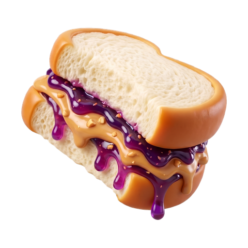

Open MCP repo landing
Sandwich Public
This GitHub Pages site is the public front door for sandwich-public, the open plugin that lets AI agents search caregiving resources and estimate long-term care costs. The product itself lives on Sandwich.
The Sandwich Directory MCP in this repository is read-only and needs no account. Setup notes for Claude, Cursor, and other clients are on the agent docs.